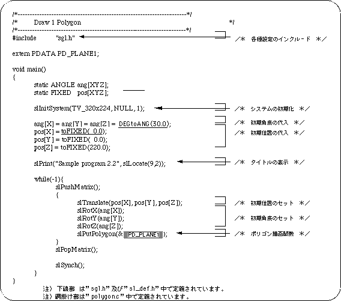

Return to previous page | Return to menu | Go to next page
Use the library function “slPutPolygon” to draw polygons with SGL. This function draws the polygon specified as a parameter, but the display position and various conversion operations (rotation, translation, scaling) follow the current matrix.
Hereafter, I will explain with reference to the sample program.
In the sample program, after making the necessary preparations for polygon drawing (initialization, setting of coordinates and display angle, etc.), display the polygons using the hierarchy matrix concept (see “Chapter 5: Matrix” for details). The position, display angle, enlargement / reduction ratio (unused in this case) are determined, and actual polygon drawing is performed based on these data.
The library function “slPutPolygon (& PD_DATA):” is used to draw polygons.
“& PD_DATA” in parentheses is a variable that collects the parameters necessary for polygon display and is defined in the data file “polygon.c”. (See “List 2-2: polygon.c: Polygon parameters”.)
